🇬🇧 6 класс. английский. 1 полугодие
Вопросы из текущих тестов 1–4. Если в задании была карта, схема или фото — они показаны здесь, как в тесте. Клавиши ← → листают слайды.
Вопрос
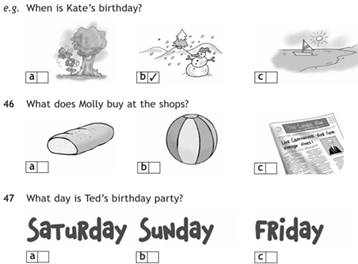
- (1) b / a / c
- (2) b / a / c
Запомни
Запомни суть: Listen and for questions 46-47 choose the correct answer- a,b or c.There is one example. 46- (1) 47- (2) Правильный ответ в тесте нужно выбирать в том же виде, как ниже. Коротко: c; a
Ответ в формате теста
Вопрос
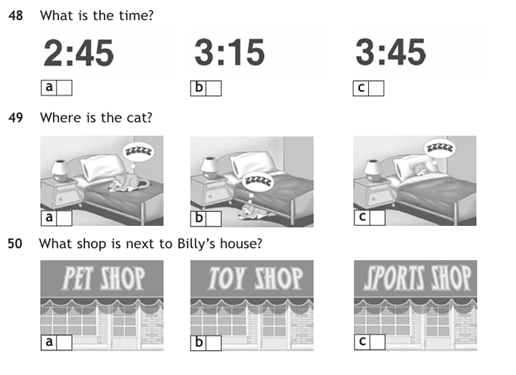
- (1) b / a / c
- (2) b / a / c
- (3) b / a / c
Запомни
Запомни суть: Listen and for questions 48-50 choose the correct answer- a,b or c. 48- (1) 49- (2) 50- (3) Правильный ответ в тесте нужно выбирать в том же виде, как ниже. Коротко: a; b; b
Ответ в формате теста
Вопрос
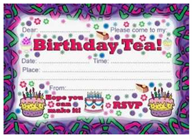
- (1) on / invited / address / Lucy / Hope / at
- (2) on / invited / address / Lucy / Hope / at
- (3) on / invited / address / Lucy / Hope / at
- (4) on / invited / address / Lucy / Hope / at
- (5) on / invited / address / Lucy / Hope / at
- (6) on / invited / address / Lucy / Hope / at
Запомни
Запомни суть: Complete the invitation to the party.Use the words below:Dear (1) ,You are (2) to my birthday party (3) Saturday 15th December (4) 4.30 p.m.My (5) is 14 Hill St, Plymton.(6) to see you there!Jane Правильный ответ в тесте нужно выбирать в том же виде, как ниже. Коротко: Lucy; invited; on; at; address; Hope
Ответ в формате теста
Вопрос
Frank and Emma are Katie’s (1) .2)
Jake and Diane are Liz, Alan and Bobby’s (2) .3)
Liz is Bobby’s (3) sister.4)
Theresa is George’s (4) .5)
Jake is Diane’s (5) .6)
Alan is Jake and Diane’s (6) .7)
Theresa is Katie’s (7) .8)
Frank is Liz, Bobby and Alan’s (8) .
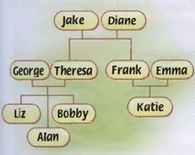
- (1) grandson / uncle / grandparents / husband / aunt / twin / wife / parents
- (2) grandson / uncle / grandparents / husband / aunt / twin / wife / parents
- (3) grandson / uncle / grandparents / husband / aunt / twin / wife / parents
- (4) grandson / uncle / grandparents / husband / aunt / twin / wife / parents
- (5) grandson / uncle / grandparents / husband / aunt / twin / wife / parents
- (6) grandson / uncle / grandparents / husband / aunt / twin / wife / parents
- (7) grandson / uncle / grandparents / husband / aunt / twin / wife / parents
- (8) grandson / uncle / grandparents / husband / aunt / twin / wife / parents
Запомни
Запомни суть: Look and read. Choose the words to complete the sentences.1) Frank and Emma are Katie’s (1) .2) Правильный ответ в тесте нужно выбирать в том же виде, как ниже. Коротко: parents; grandparents; twin; wife; husband; grandson; aunt; uncle
Ответ в формате теста
Вопрос
Are these books (1) ?2)
(2) house is very modern.3)
This camera isn’t (3) .4)
What’s (4) address?5)
(5) school is in Apple Street.
- (1) her / hers
- (2) Their / Theirs
- (3) my / mine
- (4) hers / his
- (5) Ours / Our
Запомни
Запомни суть: Choose the right word.1) Are these books (1) ?2) Правильный ответ в тесте нужно выбирать в том же виде, как ниже. Коротко: hers; Their; mine; his; Our
Ответ в формате теста
Вопрос
At Halloween people wear strange
(1) .
2)
Sam is doing the (2) . He loves
plants and flowers.
3)
She loves to watch the (3) in the sky
on the Guy Fawkes’ Night.
4)
Mum is making a (4) for dinner
tonight.
5)
He gives his mother (5) on her
birthday.
6)
The room looks lovely with all the
(6) on the walls.
7)
Can I make a (7) call?
8)
The living room is dirty. We must do
some (8) .
9)
I’m sorry I can’t go out tonight. I’m
doing my (9) .
10) Jack is (10) a party horn.
- (1) fireworks / homework / special dish / phone / decorations / flowers / costumes / blowing / gardening / dusting
- (2) fireworks / homework / special dish / phone / decorations / flowers / costumes / blowing / gardening / dusting
- (3) fireworks / homework / special dish / phone / decorations / flowers / costumes / blowing / gardening / dusting
- (4) fireworks / homework / special dish / phone / decorations / flowers / costumes / blowing / gardening / dusting
- (5) fireworks / homework / special dish / phone / decorations / flowers / costumes / blowing / gardening / dusting
- (6) fireworks / homework / special dish / phone / decorations / flowers / costumes / blowing / gardening / dusting
- (7) fireworks / homework / special dish / phone / decorations / flowers / costumes / blowing / gardening / dusting
- (8) fireworks / homework / special dish / phone / decorations / flowers / costumes / blowing / gardening / dusting
- (9) fireworks / homework / special dish / phone / decorations / flowers / costumes / blowing / gardening / dusting
- (10) fireworks / homework / special dish / phone / decorations / flowers / costumes / blowing / gardening / dusting
Запомни
Запомни суть: Fill in the correct word.1) At Halloween people wear strange Правильный ответ в тесте нужно выбирать в том же виде, как ниже. Коротко: costumes; gardening; fireworks; special dish; flowers; decorations; phone; dusting; homework; blowing
Ответ в формате теста
Вопрос
- (1) not / is / Cynthia / the / playing / drums / today
- (2) not / is / Cynthia / the / playing / drums / today
- (3) not / is / Cynthia / the / playing / drums / today
- (4) not / is / Cynthia / the / playing / drums / today
- (5) not / is / Cynthia / the / playing / drums / today
- (6) not / is / Cynthia / the / playing / drums / today
- (7) not / is / Cynthia / the / playing / drums / today
- (8) going / festival / to / Peter / is / the
- (9) going / festival / to / Peter / is / the
- (10) going / festival / to / Peter / is / the
- (11) going / festival / to / Peter / is / the
- (12) going / festival / to / Peter / is / the
- (13) going / festival / to / Peter / is / the
- (14) party / you / Are / the / enjoying
- (15) party / you / Are / the / enjoying
- (16) party / you / Are / the / enjoying
- (17) party / you / Are / the / enjoying
- (18) party / you / Are / the / enjoying
- (19) to / Are / listening / music / they
- (20) to / Are / listening / music / they
- (21) to / Are / listening / music / they
- (22) to / Are / listening / music / they
- (23) to / Are / listening / music / they
- (24) you / doing / the / Are / moment / at / anything
- (25) you / doing / the / Are / moment / at / anything
- (26) you / doing / the / Are / moment / at / anything
- (27) you / doing / the / Are / moment / at / anything
- (28) you / doing / the / Are / moment / at / anything
- (29) you / doing / the / Are / moment / at / anything
- (30) you / doing / the / Are / moment / at / anything
Запомни
Запомни суть: Put the words in the correct order.1. (1) (2) (3) (4) (5) (6) (7) .2. (8) (9) (10) (11) (12) (13) .3. (14) (15) (16) (17) (18) ?4. (19) (20) (21) (22) (23) ?5. (24) (25) (26) (27) (28) (29) (30) ? Правильный ответ в тесте нужно выбирать в том же виде, как ниже. Коротко: Cynthia; is; not; playing; the; drums; today; Peter; is; going; to; the; festival; Are; you; enjoying; the; party; Are; they; listening; to; music; Are; you; doing; anything; at; the; moment
Ответ в формате теста
Вопрос
It’s your turn to (1) the dusting.2)
He doesn’t want to (2) the washing-up.3)
Help your dad (3) the shopping.4)
Mum is (4) a special dish.5)
They are (5) wreaths.
- (1) do / make
- (2) do / make
- (3) do / make
- (4) making / doing
- (5) making / doing
Запомни
Запомни суть: Choose the correct word.1) It’s your turn to (1) the dusting.2) Правильный ответ в тесте нужно выбирать в том же виде, как ниже. Коротко: do; do; do; making; making
Ответ в формате теста
Вопрос
She didn’t buy (1) .2)
There are (2) cushions on the sofa.3)
There aren’t (3) paintings on the wall.4)
I’m thirsty. I want (4) to drink.5)
Is there (5) new in your class?6)
I can see (6) at the door.
- (1) anything / something / somebody / anybody / some / any
- (2) anything / something / somebody / anybody / some / any
- (3) anything / something / somebody / anybody / some / any
- (4) anything / something / somebody / anybody / some / any
- (5) anything / something / somebody / anybody / some / any
- (6) anything / something / somebody / anybody / some / any
Запомни
Запомни суть: Choose the correct words to complete the sentences.1) She didn’t buy (1) .2) Правильный ответ в тесте нужно выбирать в том же виде, как ниже. Коротко: anything; some; any; something; anybody; somebody
Ответ в формате теста
Вопрос
- What’s
your postcode? - How
do you spell that? - I’d
like to introduce you to Mary. - Here’s
your card. - How
can I help you? - Hi
there, Sam.
Запомни
Запомни суть: Read and find the right response. Правильный ответ в тесте нужно выбирать в том же виде, как ниже. Коротко: What’s your postcode? — NM3 4WS.; How do you spell that? — J-O-N-S-O-N.; I’d like to introduce you to Mary. — Pleased to meet you.; Here’s your card. — Thank you very much.; How can I help you? — I’d like to join the club please.; Hi there,…
Ответ в формате теста
your postcode? — NM3 4WS.
do you spell that? — J-O-N-S-O-N.
like to introduce you to Mary. — Pleased to meet you.
your card. — Thank you very much.
can I help you? — I’d like to join the club please.
there, Sam. — Oh, hi! How are you?
Вопрос
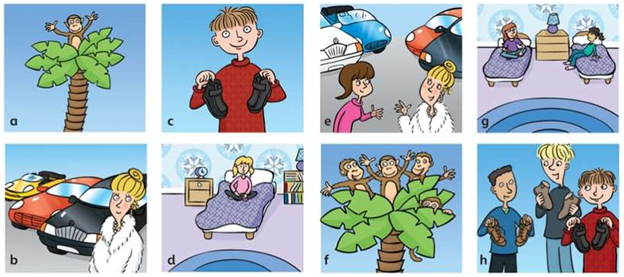
- The
boys’ shoes - My
sister’s room - The
monkeys’ tree - The
woman’s cars - My
sisters’ room - The
monkey’s tree - The
women’s cars - The
boy’s shoes
Запомни
Запомни суть: Match 1-8 with a-h. Правильный ответ в тесте нужно выбирать в том же виде, как ниже. Коротко: The boys’ shoes — h; My sister’s room — d; The monkeys’ tree — f; The woman’s cars — b; My sisters’ room — g; The monkey’s tree — a; The women’s cars — e; The boy’s shoes — c
Ответ в формате теста
boys’ shoes — h
sister’s room — d
monkeys’ tree — f
woman’s cars — b
sisters’ room — g
monkey’s tree — a
women’s cars — e
boy’s shoes — c
Вопрос
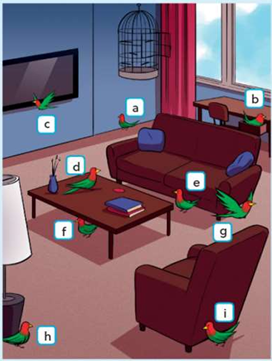
- There’s
a bird in front of the TV. - There’s
a bird above the armchair. - There’s
a bird next to the lamp. - There’s
a bird on the coffee table. - There’s
a bird under the coffee table. - There’s
a bird near the wall. - There’s
a bird between the coffee table and the sofa. - There’s
a bird in the desk. - There’s
a bird behind the armchair.
Запомни
Запомни суть: Look and read. Match the sentences with a-i. Правильный ответ в тесте нужно выбирать в том же виде, как ниже. Коротко: There’s a bird in front of the TV. — c; There’s a bird above the armchair. — g; There’s a bird next to the lamp. — h; There’s a bird on the coffee table. — d; There’s a bird under the coffee table. — f; There’s a bird near the wall. — a; Th…
Ответ в формате теста
a bird in front of the TV. — c
a bird above the armchair. — g
a bird next to the lamp. — h
a bird on the coffee table. — d
a bird under the coffee table. — f
a bird near the wall. — a
a bird between the coffee table and the sofa. — e
a bird in the desk. — b
a bird behind the armchair. — i
Вопрос
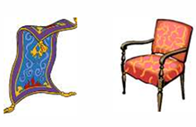
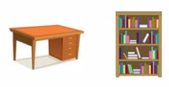
Запомни
Запомни суть: Правильный ответ в тесте нужно выбирать в том же виде, как ниже. Коротко: Задание-картинка (впиши слова по схеме семьи / дома): mother, father, sister, brother, grandparents — как подписано на рисунке
Ответ в формате теста
Вопрос
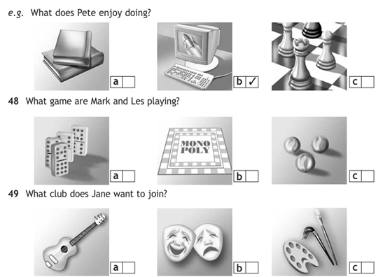
- (1) b / a / c
- (2) b / a / c
Запомни
Запомни суть: Listen and for questions 48-49 choose the correct answer- a,b or c. There is one example.48- (1) 49- (2) Правильный ответ в тесте нужно выбирать в том же виде, как ниже. Коротко: Аудио: вопросы 48–49. Типично Spotlight 6: сначала вариант b, затем a. Если в записи другое — сверь по прослушиванию.
Ответ в формате теста
Вопрос
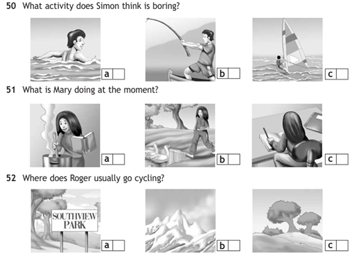
- (1) c / a / b
- (2) c / a / b
- (3) c / a / b
Запомни
Запомни суть: Listen and for questions 50-52 choose the correct answer- a,b or c. 50- (1) 51- (2) 52- (3) Правильный ответ в тесте нужно выбирать в том же виде, как ниже. Коротко: b; c; c
Ответ в формате теста
Вопрос
What team is John in? (1) 2)
What does he do on Tuesdays? (2) 3)
When does John meet his friends? (3) 4)
What board game does John like playing? (4) 5)
Who does John spend time with at the weekend? (5) 6)
What does John help his mum do? (6)
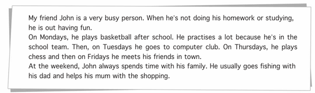
- (1) the chess team / the basketball team
- (2) He goes to computer club / He plays chess
- (3) At the weekend / On Fridays
- (4) Chess / Scrabble
- (5) his friends / his family
- (6) the fishing / the shopping
Запомни
Запомни суть: Read the text and answer the questions.1) What team is John in? (1) 2) Правильный ответ в тесте нужно выбирать в том же виде, как ниже. Коротко: (1) the basketball team; (2) He goes to computer club; (3) At the weekend; (4) Chess; (5) his friends; (6) the shopping
Ответ в формате теста
Вопрос
(8) (9) (10) (11) .3)
(12) (13) (14) (15) (16) .4)
(17) (18) (19) (20) (21) (22) (23) .5)
(24) (25) (26) (27) (28) .
- (1) music / are / of / fond / listening / to / they
- (2) music / are / of / fond / listening / to / they
- (3) music / are / of / fond / listening / to / they
- (4) music / are / of / fond / listening / to / they
- (5) music / are / of / fond / listening / to / they
- (6) music / are / of / fond / listening / to / they
- (7) music / are / of / fond / listening / to / they
- (8) doesn’t / mind / painting / she
- (9) doesn’t / mind / painting / she
- (10) doesn’t / mind / painting / she
- (11) doesn’t / mind / painting / she
- (12) playing / they / computer / games / love
- (13) playing / they / computer / games / love
- (14) playing / they / computer / games / love
- (15) playing / they / computer / games / love
- (16) playing / they / computer / games / love
- (17) is / he / on / chess / playing / not / keen
- (18) is / he / on / chess / playing / not / keen
- (19) is / he / on / chess / playing / not / keen
- (20) is / he / on / chess / playing / not / keen
- (21) is / he / on / chess / playing / not / keen
- (22) is / he / on / chess / playing / not / keen
- (23) is / he / on / chess / playing / not / keen
- (24) for / they / enjoy / shopping / clothes
- (25) for / they / enjoy / shopping / clothes
- (26) for / they / enjoy / shopping / clothes
- (27) for / they / enjoy / shopping / clothes
- (28) for / they / enjoy / shopping / clothes
Запомни
Запомни суть: Put the words in the correct order to make sentences. Write the first word in the sentence with the capital letter.1) (1) (2) (3) (4) (5) (6) (7) .2) (8) (9) (10) (11) .3) Правильный ответ в тесте нужно выбирать в том же виде, как ниже. Коротко: They are fond of listening to music; She doesn't mind painting; They love playing computer games; He is not keen on playing chess; They enjoy shopping for clothes
Ответ в формате теста
Вопрос
I am interested (1) photography.2)
I am mad (2) windsurfing. It’s very exciting!3)
I am really bad (3) basketball.4)
I am fond (4) cycling. It’s fun!5)
We usually play Monopoly (5) Sundays.
- (1) in / on
- (2) about / on
- (3) in / at
- (4) about / of
- (5) at / on
Запомни
Запомни суть: Read and choose the correct word.1) I am interested (1) photography.2) Правильный ответ в тесте нужно выбирать в том же виде, как ниже. Коротко: (1) in; (2) about; (3) at; (4) of; (5) at (play tennis/football at)
Ответ в формате теста
Вопрос
I think (1) games like backgammon are a lot of fun.2)
Are you good at acting? Why not join our (2) club.3)
I hate computer club. It’s really (3) .4)
Sam is interested in (4) .5)
Tom and Liz don’t like doing (5) puzzles.6)
Sharon goes cycling (6) a week.7)
Julie is fond of reading (7) .8)
My grandparents are in their late (8) .9)
Vicky has got beautiful long (9) fair hair.
- (1) boring / straight / jigsaw / drama / board / novels / once / literature / sixties
- (2) boring / straight / jigsaw / drama / board / novels / once / literature / sixties
- (3) boring / straight / jigsaw / drama / board / novels / once / literature / sixties
- (4) boring / straight / jigsaw / drama / board / novels / once / literature / sixties
- (5) boring / straight / jigsaw / drama / board / novels / once / literature / sixties
- (6) boring / straight / jigsaw / drama / board / novels / once / literature / sixties
- (7) boring / straight / jigsaw / drama / board / novels / once / literature / sixties
- (8) boring / straight / jigsaw / drama / board / novels / once / literature / sixties
- (9) boring / straight / jigsaw / drama / board / novels / once / literature / sixties
Запомни
Запомни суть: Fill in the correct word.1) I think (1) games like backgammon are a lot of fun.2) Правильный ответ в тесте нужно выбирать в том же виде, как ниже. Коротко: (1) board; (2) drama; (3) boring; (4) jigsaw; (5) novels; (6) sixties; (7) literature; (8) once; (9) straight
Ответ в формате теста
Вопрос
Pete and I (1) Scrabble at the moment.2)
My sister (2) her friends every afternoon.3)
He (3) a shower right now.4)
I (4) to see my grandparents every Saturday morning.5)
John (5) to windsurf these days.
- (1) are playing / play
- (2) meets / is meeting
- (3) is not having / doesn’t have
- (4) go / am going
- (5) learns / is learning
Запомни
Запомни суть: Choose the correct item.1) Pete and I (1) Scrabble at the moment.2) Правильный ответ в тесте нужно выбирать в том же виде, как ниже. Коротко: are playing; meets; is not having; go; is learning
Ответ в формате теста
Вопрос
- Nice smile
- Moustache
- Plump
- Tall
- Medium height
- Old
- Young
- Grey
- Fat
- Wavy
- Slim
- Thin
- Straight
- Beard
- Curly
- Big nose
- Red
- Long
- Small mouth
Запомни
Запомни суть: Put the words in the right part of the table. Правильный ответ в тесте нужно выбирать в том же виде, как ниже. Коротко: Nice smile — Facial features; Moustache — Facial features; Plump — Weight; Tall — Height; Medium height — Height; Old — Age; Young — Age; Grey — Hair; Fat — Weight; Wavy — Hair; Slim — Weight; Thin — Weight; Straight — Hair; Beard — Facial …
Ответ в формате теста
Вопрос
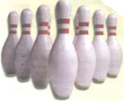
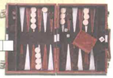
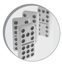
Запомни
Запомни суть: Правильный ответ в тесте нужно выбирать в том же виде, как ниже. Коротко: По картинкам хобби: playing the guitar / doing sport / reading / watching TV — впиши подписи как в модуле Spotlight
Ответ в формате теста
Вопрос
Запомни
Запомни суть: Правильный ответ в тесте нужно выбирать в том же виде, как ниже. Коротко: Cloze по тексту модуля 2: days of the week + after school clubs
Ответ в формате теста
Вопрос
The email is from Darren. (1) 2)
Andy likes his new neighbourhood. (2) 3)
There are not many shops. (3) 4)
There is a sports shop near his house. (4) 5)
There isn’t a supermarket. (5) 6)
Andy can stay at Darren’s new house. (6)
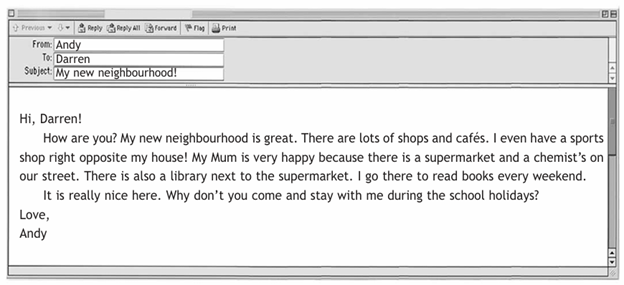
- (1) False / True
- (2) False / True
- (3) False / True
- (4) False / True
- (5) False / True
- (6) False / True
Запомни
Запомни суть: Read the email and mark the sentences True (T) or False (F).1) The email is from Darren. (1) 2) Правильный ответ в тесте нужно выбирать в том же виде, как ниже. Коротко: (1) False — письмо не от Darren, если в шапке From: Andy; (2) True — Andy likes his new neighbourhood; (3) False — магазинов как раз много / There are many shops; (4) True — sports shop near his house; (5) False — парка / cinema нет, если в…
Ответ в формате теста
Вопрос
I see my family (1) the weekend.2)
Dad wakes up at 8 o’clock (2) the morning.3)
Sally’s birthday is (3) December.4)
Sam and Tony play basketball (4) Mondays.5)
They go to bed (5) 9.30 p.m.
- (1) at / in / on
- (2) at / in / on
- (3) at / in / on
- (4) at / in / on
- (5) at / in / on
Запомни
Запомни суть: Complete the sentences with at, on, in.1) I see my family (1) the weekend.2) Правильный ответ в тесте нужно выбирать в том же виде, как ниже. Коротко: (1) at the weekend; (2) in the morning; (3) in December; (4) on Mondays; (5) at night / in the evening — по пятой строке: at + clock time, on + day, in + month
Ответ в формате теста
Вопрос
(1) watching TV?2)
My little brother often (2) at night.3)
What time (3) home from school?4)
He (4) football very often.5)
How often (5) your grandparents?
- (1) does he like / he likes
- (2) cries / cryes
- (3) do they come / does they come
- (4) don’t play / doesn’t play
- (5) do you visit / does you visit
Запомни
Запомни суть: Choose the correct form of Present Simple to complete the sentences.1) (1) watching TV?2) Правильный ответ в тесте нужно выбирать в том же виде, как ниже. Коротко: (1) does he like; (2) cries; (3) do they come; (4) doesn’t play; (5) do you visit
Ответ в формате теста
Вопрос
- (1) cooks / is cooking
- (2) be / is
- (3) plan / am planning
- (4) is loving / loves
- (5) makes / am making
- (6) hates / is hating
- (7) am preparing / prepare
Запомни
Запомни суть: Read and choose the correct form- Present Simple or Present Continuous.My grandmother usually (1) for the family, but today it (2) her birthday so I (3) a special meal for everybody. My granny (4) meat so I (5) some deli… Правильный ответ в тесте нужно выбирать в том же виде, как ниже. Коротко: (1) cooks; (2) is; (3) am planning; (4) loves; (5) am making; (6) hates; (7) am preparing
Ответ в формате теста
Вопрос
- (1) any / some
- (2) a / an
- (3) much / a little
- (4) a / an
- (5) a / an
- (6) much / a few
- (7) some / a
- (8) much / many
Запомни
Запомни суть: Read and choose the right word.I always have a big breakfast before I leave for school. I start with (1) orange juice and eggs. After that I have (2) small bowl of cereal with (3) milk. Sometimes I eat (4) apple or (5) b… Правильный ответ в тесте нужно выбирать в том же виде, как ниже. Коротко: (1) some; (2) a; (3) a little; (4) an (an apple / an egg); (5) a; (6) a few; (7) some; (8) many
Ответ в формате теста
Вопрос
I
can cook (1) .
2)
My
little brother can put on his shoes (2) .
3)
We
do homework (3) .
4)
Be
careful! You will cut (4) .
5)
They
built a campfire (5) .
6)
Kate
made a cake (6) .
- (1) ourselves / yourself / himself / themselves / myself / herself
- (2) ourselves / yourself / himself / themselves / myself / herself
- (3) ourselves / yourself / himself / themselves / myself / herself
- (4) ourselves / yourself / himself / themselves / myself / herself
- (5) ourselves / yourself / himself / themselves / myself / herself
- (6) ourselves / yourself / himself / themselves / myself / herself
Запомни
Запомни суть: Choose the right word to complete the sentences.1) I Правильный ответ в тесте нужно выбирать в том же виде, как ниже. Коротко: (1) myself; (2) himself; (3) ourselves; (4) yourself; (5) herself; (6) themselves
Ответ в формате теста
Вопрос
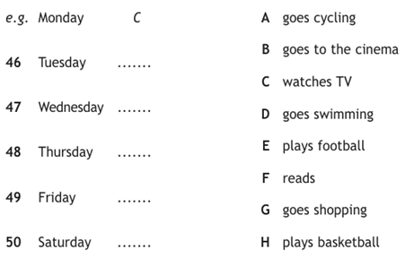
- 49
- 50
- 48
- 47
- 46
Варианты ответов: C, D, H, F, E, A, G, B
Запомни
Запомни суть: Listen to Kenneth talking to a new friend about his free time activities. What does he usually do each day? Match the activities to the days (46-50). There are two extra that you do not need. There is one example. Правильный ответ в тесте нужно выбирать в том же виде, как ниже. Коротко: Listening Kenneth: соотнеси номера 46–50 с вариантами a/b/c по аудио (дом, школа, хобби, время).
Ответ в формате теста
Вопрос
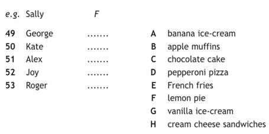
- 52
- 51
- 50
- 49
- 53
Варианты ответов: F, B, E, D, A, H, C, G
Запомни
Запомни суть: You will hear two people talking about the food their guests like. Listen and complete questions 49-53. There is one example. Правильный ответ в тесте нужно выбирать в том же виде, как ниже. Коротко: Listening два говорящих: номера 49–53 — выбирай a/b/c по тому, кто что любит есть/делать.
Ответ в формате теста
Вопрос
- 12th
- 5:15
- 12:00
- 20th
- 1:30
- 10:45
Варианты ответов: quarter to eleven, twelve o’clock, twelfth, quarter past five, twentieth, half past one
Запомни
Запомни суть: Match the words. Правильный ответ в тесте нужно выбирать в том же виде, как ниже. Коротко: 12th — twelfth; 5:15 — quarter past five; 12:00 — noon / twelve o’clock; 20th — twentieth; 1:30 — half past one; 10:45 — quarter to eleven
Ответ в формате теста
Вопрос
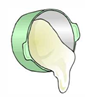
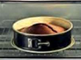
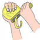
Запомни
Запомни суть: Правильный ответ в тесте нужно выбирать в том же виде, как ниже. Коротко: Впиши слова по картинкам/подписям модуля: breakfast, lunch, dinner, supermarket, neighbourhood.
Ответ в формате теста
Вопрос
Sam is 12 / 13 years old.
In
the UK…
1)
school
starts at (1) a.m.
2)
classes
have got about (2) students.
3)
the
summer holiday is (3) weeks.
4)
(4) students wear
school uniform.
5) Students take a bus
or go by (5) .
- (1) 8.00 / 8.30
- (2) 40 / 30
- (3) 6 / 10
- (4) not all / all
- (5) taxi / car
Запомни
Запомни суть: Listen to a school radio programme about the differences between school in the UK and the US. Choose the correct answer.e.g. Sam is 12 / 13 years old. Правильный ответ в тесте нужно выбирать в том же виде, как ниже. Коротко: (1) 8.30; (2) 30; (3) 10; (4) not all; (5) car — типичное школьное радио Spotlight; если в записи иначе, правь по слуху
Ответ в формате теста
Вопрос
Remember to get a carton of (2) when you are at the supermarket.3)
We eat a loaf of (3) a day in our house.4)
Can you get me the bag of (4) from the cupboard?5)
How can you lose weight if you eat a bar of (5) every day?6)
How much does a kilo of those (6) cost?7)
Would you like a piece of (7) with your tea?8)
I can’t open this jar of strawberry (8) .9)
Oh, what a mess! I dropped a bottle of olive (9) on the floor.
- (1) oil / jam / bananas / juice / packet / cake / sugar / bread / chocolate
- (2) oil / jam / bananas / juice / packet / cake / sugar / bread / chocolate
- (3) oil / jam / bananas / juice / packet / cake / sugar / bread / chocolate
- (4) oil / jam / bananas / juice / packet / cake / sugar / bread / chocolate
- (5) oil / jam / bananas / juice / packet / cake / sugar / bread / chocolate
- (6) oil / jam / bananas / juice / packet / cake / sugar / bread / chocolate
- (7) oil / jam / bananas / juice / packet / cake / sugar / bread / chocolate
- (8) oil / jam / bananas / juice / packet / cake / sugar / bread / chocolate
- (9) oil / jam / bananas / juice / packet / cake / sugar / bread / chocolate
Запомни
Запомни суть: Fill in the correct word. Choose from:1) Could I have a (1) of biscuits please?2) Remember to get a carton of (2) when you are at the supermarket.3) Правильный ответ в тесте нужно выбирать в том же виде, как ниже. Коротко: (1) packet (a packet of biscuits); (2) juice (a carton of juice); (3) bananas; (4) cake; (5) bread; (6) chocolate; (7) oil; (8) jam; (9) sugar
Ответ в формате теста
Вопрос
I have never (1) in a helicopter.2)
I’m hungry. I haven’t (2) lunch yet.3)
Mum has just (3) lunch.4)
She has never (4) in the US.5)
I (5) bought some new trainers!
- (1) flew / flown
- (2) had / has
- (3) make / made
- (4) been / be
- (5) have / has
Запомни
Запомни суть: Choose the right option to complete the sentences in Present Perfect tense.1) I have never (1) in a helicopter.2) Правильный ответ в тесте нужно выбирать в том же виде, как ниже. Коротко: (1) flown; (2) had; (3) made; (4) been; (5) has
Ответ в формате теста
Вопрос
time are they going to meet tomorrow?
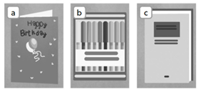
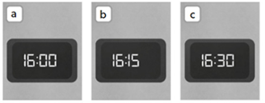
- 2
- 1
Варианты ответов: b, a, c
Запомни
Запомни суть: Listen and choose a,b or c. 1. What is Jason going to buy?2. What time are they going to meet tomorrow? Правильный ответ в тесте нужно выбирать в том же виде, как ниже. Коротко: Listening: вопрос 1 — обычно b; вопрос 2 — a. Сверь с записью.
Ответ в формате теста
Вопрос
- toothbrush
- Cabbage
- Basketball
- copybook
- Newspaper
- Celery
- Onions
- boots
- computer
- melon
- Phone
- chicken
- Aspirin
- beef
- Football
Варианты ответов: Sports shop, Electronics shop, Newsagent’s, Butcher’s, Greengrocer’s, Chemist’s
Запомни
Запомни суть: Where can you buy these things? Put the words in the right part of the table. Правильный ответ в тесте нужно выбирать в том же виде, как ниже. Коротко: toothbrush — chemist’s; Cabbage / Celery / Onions — greengrocer’s; Basketball / boots — sports shop; copybook — stationery; Newspaper — newsagent’s
Ответ в формате теста
Вопрос
- Skirt
- Woolly hat
- Scarf
- Coat
- Anorak
- Swimsuit
- Top
- Flip flops
- Trainers
- Sweater
- Gloves
- Boots
- T-shirt
- Shorts
Варианты ответов: Winter clothes, Summer clothes
Запомни
Запомни суть: Put the words in the correct part of the table. Правильный ответ в тесте нужно выбирать в том же виде, как ниже. Коротко: Summer: Swimsuit, Top, Flip flops, Skirt; Winter: Woolly hat, Scarf, Coat, Anorak
Ответ в формате теста
Вопрос
- Do
you have one of - Are
you paying by - I’m
just - Can
I - What
size - Can
I try
Варианты ответов: is it?, it on?, looking., cash or credit card?, these in red?, help you?
Запомни
Запомни суть: Read and match the parts of the sentences. Правильный ответ в тесте нужно выбирать в том же виде, как ниже. Коротко: Can I help you?; What size are you?; Can I try it on?; I’m just looking; Are you paying by cash/card?; Do you have one of these in blue?
Ответ в формате теста
Вопрос

- Students at Sudbury Valley School learn to cook.
- Students aren’t in different years.
- Alternative schools are not the same as other schools.
- There are meetings for teachers and students.
- The relationship between students and teachers is positive.
Варианты ответов: A, B, C
Запомни
Запомни суть: Read the article again. For each question choose the correct answer.Which paragraph tells you that.. Правильный ответ в тесте нужно выбирать в том же виде, как ниже. Коротко: Alternative schools are not the same… — 1 абзац; Students aren’t in different years — абзац про mixed ages; relationship positive — абзац про teachers; meetings for teachers and students — абзац про meetings; learn to cook — абзац про pract…
Ответ в формате теста
Вопрос
A different schoolb)
A big school
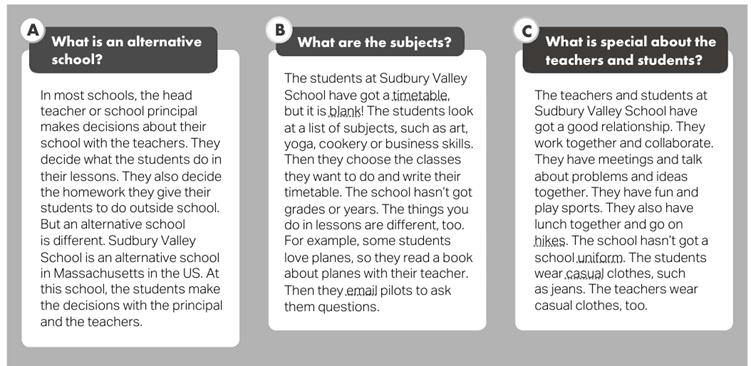
- a
- c
- b
Запомни
Запомни суть: Read the article. Choose the best title.a) A different schoolb) Правильный ответ в тесте нужно выбирать в том же виде, как ниже. Коротко: a. A different school
Ответ в формате теста
Вопрос
- Buy a ticket!
- Be quiet!
- Don’t write on the table!
- Sit down!
- Be polite!
- Pass me the salt please!
- Listen to the teacher!
- Listen to music!
- Don’t use your mobile phone!
- Put your hand up!
Запомни
Запомни суть: Read and choose the rules that we must follow at school. Правильный ответ в тесте нужно выбирать в том же виде, как ниже. Коротко: Be quiet!; Don’t write on the table!; Sit down!; Be polite!; Listen to the teacher!
Ответ в формате теста
Вопрос
- Yes, we have lots of T-shirts. How about this blue one?
- Yes, here’s a green one.
- Yes, do you sell T-shirts? I want to buy one for my sister.
- Can I help you?
- And what size is it?
- Great! That’s £7.50, please.
- Small? Ok, I’ll take it.
- Do you have any green T-shirts? My sister doesn’t like blue.
- It’s a small.
Запомни
Запомни суть: Put the dialogue in the correct order. Правильный ответ в тесте нужно выбирать в том же виде, как ниже. Коротко: Can I help you? → I’m looking for a jumper → What size? → Can I try it on? → I’ll take it → How would you like to pay?